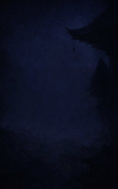
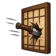
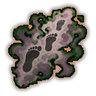
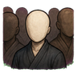
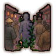
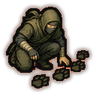
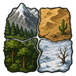
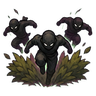

Technique trees › Skills and beast arts
Gigei Onmitsu (Skill techniques: covert)
10 techniques in the Ninjutsu tab.
Learned from technique scrolls, mission rewards, written scrolls and scroll merchants; some NPC ninja know it. It counts toward the ninja build like other trees.

Machibuse Shoden (Ambush basics) C
Chakra 20. C-rank. Finish what you start: a brutal strike on one enemy.
Machibuse Shoden (Ambush basics) C
Chakra 20. C-rank. Finish what you start: a brutal strike on one enemy.
C-rank. Finish what you start: a brutal strike on one enemy.
| Rank | Chakra | Cooldown | Class level |
|---|---|---|---|
| C | 20 | 15 s | 5 |

Tonsō Kaihi (Escape and evasion) C
Chakra 20. C-rank. Vanish in a puff of smoke and reappear nearby.
Tonsō Kaihi (Escape and evasion) C
Chakra 20. C-rank. Vanish in a puff of smoke and reappear nearby.
C-rank. Vanish in a puff of smoke and reappear nearby.
| Rank | Chakra | Cooldown | Class level |
|---|---|---|---|
| C | 20 | 15 s | 5 |

Mumen (Faceless) C
Passive. C-rank passive. A face nobody remembers: easier talks with strangers.
Mumen (Faceless) C
Passive. C-rank passive. A face nobody remembers: easier talks with strangers.
C-rank passive. A face nobody remembers: easier talks with strangers.

Magire Kaiden (Mingling supremacy) C
Chakra 20. C-rank. Fade into the background for a while.
Magire Kaiden (Mingling supremacy) C
Chakra 20. C-rank. Fade into the background for a while.
C-rank. Fade into the background for a while.
| Rank | Chakra | Cooldown | Class level |
|---|---|---|---|
| C | 20 | 15 s | 5 |

Tsuiseki Kaiden (Tracking mastery) C
Passive. C-rank passive. A veteran hunter, rarely caught unawares.
Tsuiseki Kaiden (Tracking mastery) C
Passive. C-rank passive. A veteran hunter, rarely caught unawares.
C-rank passive. A veteran hunter, rarely caught unawares.

Chikei Shuren (Terrain training) C
Passive. C-rank passive. Trained to fight anywhere.
Chikei Shuren (Terrain training) C
Passive. C-rank passive. Trained to fight anywhere.
C-rank passive. Trained to fight anywhere.
Mukon (Traceless) C
Passive. C-rank passive. Leaves no sign: quieter on the hunt.
Mukon (Traceless) C
Passive. C-rank passive. Leaves no sign: quieter on the hunt.
C-rank passive. Leaves no sign: quieter on the hunt.

Machibuse Kaiden (Ambush supremacy) B
Chakra 35. B-rank. Spring a devastating ambush: everyone around you is hit and stunned.
Machibuse Kaiden (Ambush supremacy) B
Chakra 35. B-rank. Spring a devastating ambush: everyone around you is hit and stunned.
B-rank. Spring a devastating ambush: everyone around you is hit and stunned.
| Rank | Chakra | Cooldown | Class level |
|---|---|---|---|
| B | 35 | 1.2 hours | 9 |
Kinkō Kaiden (Equilibrium mastery) B
Passive. B-rank passive. Always poised: hard to pin down.
Kinkō Kaiden (Equilibrium mastery) B
Passive. B-rank passive. Always poised: hard to pin down.
B-rank passive. Always poised: hard to pin down.
Yūrei Kaiden (Ghost supremacy) B
Chakra 35. B-rank. Become almost a ghost for a short while.
Yūrei Kaiden (Ghost supremacy) B
Chakra 35. B-rank. Become almost a ghost for a short while.
B-rank. Become almost a ghost for a short while.
| Rank | Chakra | Cooldown | Class level |
|---|---|---|---|
| B | 35 | 1.2 hours | 9 |
Chakra is the technique's base cost, the number in its def. In play it is multiplied by the pawn's chakra energy usage multiplier, which traits (chakra artificer 90%, volatile conduit 110%), World of Naruto genes and jutsu enhancements change, so the technique window can show a slightly different number for each ninja. Cooldowns are in-game time, as the technique window shows them, and the pawn's cooldown stat shortens or lengthens them. World of Naruto gives every ninja a base of 100 maximum chakra; genes and traits change it.